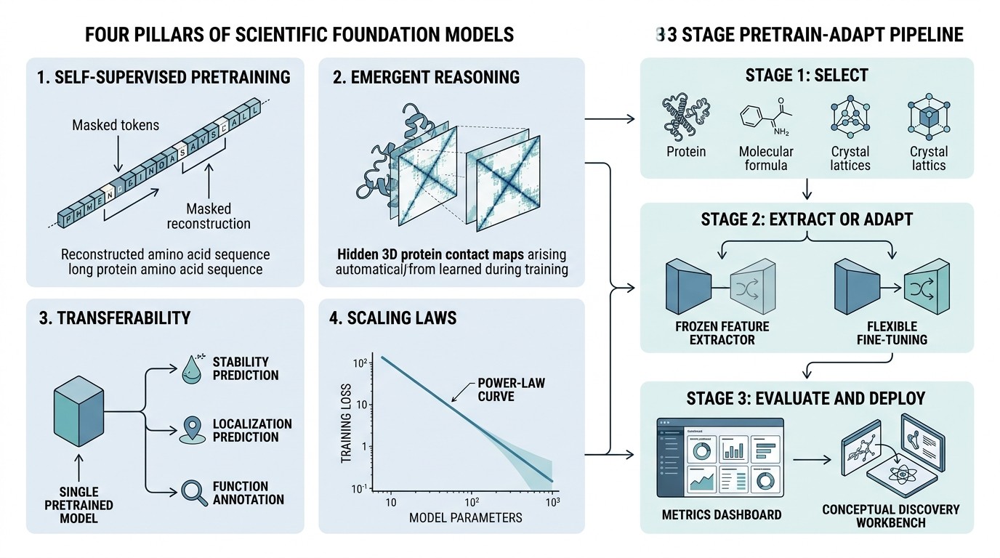
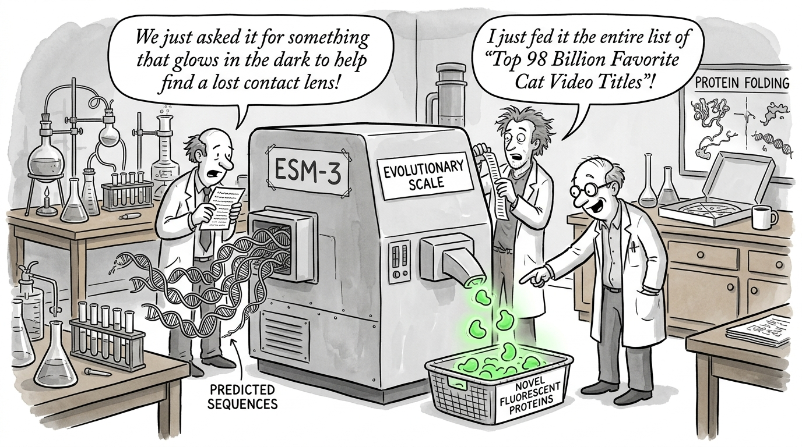

"I was pretrained on every amino acid sequence in UniProt. You could say I have a broad education but no specialization, which is exactly the opposite of a Ph.D."
A Foundation Model Pretending to Be a Scientist
A scientific foundation model is a large neural network pretrained on vast, domain-specific scientific data using self-supervised objectives, then adapted to many downstream tasks with minimal labeled data. This section defines the four pillars that distinguish these models from ordinary deep networks: self-supervised pretraining on scientific corpora, emergent scientific reasoning, transferability across tasks, and scaling laws that predict performance. We close with the 2024 Nobel Prize in Chemistry as the defining moment when scientific foundation models moved from machine learning conferences to the world stage.
1. From Language Models to Scientific Models
In 2020, a neural network that had never seen a single laboratory measurement predicted the 3D structure of a protein with near-atomic accuracy (within roughly 1 angstrom of experimental coordinates for most targets), addressing a problem that had resisted biophysical methods for roughly half a century. That network was a scientific foundation model, and its success raises a question every computational scientist now faces: what properties allow a model trained on raw, unlabeled data to reason about the physical world?
The foundation model paradigm originated in natural language processing (NLP). GPT, BERT, and their successors demonstrated that a model pretrained on unlabeled text could be adapted to translation, summarization, question answering, and dozens of other tasks by fine-tuning on small labeled datasets. The key insight, as covered in Chapter 26, is that self-supervised pretraining learns general-purpose representations that capture the statistical structure of the data.
Consider the alternative: without self-supervised pretraining, building a protein stability predictor requires tens of thousands of expensive wet-lab measurements, each costing days and thousands of dollars. Self-supervised pretraining sidesteps that bottleneck entirely, letting a model learn the rules of protein behavior from millions of unlabeled sequences already stored in public databases.
Self-supervised pretraining is a training strategy in which the model generates its own supervision signal from unlabeled data by hiding part of the input and learning to reconstruct it. This approach eliminates the need for expensive human annotations or laboratory measurements. Models can learn from millions or billions of examples already stored in scientific databases. The mechanism corrupts the input (masking a token, adding noise to coordinates, or shuffling a graph) and trains the model to recover the original, forcing it to learn the internal rules governing the data. Use self-supervised pretraining when labeled examples are scarce relative to the domain's complexity. If you already have large, high-quality labeled datasets for a narrow task, supervised training from scratch may be simpler and equally effective.
Scientific foundation models apply this same paradigm to scientific data. Instead of English sentences, the pretraining corpus consists of protein sequences, molecular graphs, crystal structures, or DNA sequences. Instead of predicting masked words, the model predicts masked amino acids, masked atoms, or masked nucleotides. The transfer hypothesis carries over directly: a model that predicts the next token in a protein sequence must internalize biophysical rules governing protein folding. Likewise, a language model that predicts the next word must internalize grammar and semantics. In short: teach a model to fill in blanks across millions of scientific records, and it discovers the laws of nature on its own.
Defining the Concept
What. A scientific foundation model is a pretrained model whose representations encode the physical, chemical, or biological laws governing its training domain.
Why. Labeled scientific data is expensive. Measuring protein stability requires wet-lab experiments; computing crystal energies requires density functional theory (DFT) calculations that take hours per structure. Self-supervised pretraining sidesteps this bottleneck by learning from the vast supply of unlabeled sequences, structures, and spectra that scientific databases have accumulated over decades.
How. Through self-supervised objectives tailored to scientific data types: masked language modeling for sequences, denoising for 3D structures, contrastive learning for molecular graphs. The model architecture (transformer, graph neural network (GNN), or equivariant network, a network whose outputs transform predictably when inputs are rotated or translated) is chosen to respect the symmetries and constraints of the data domain.
When. Use a scientific foundation model when your downstream task has limited labeled data but belongs to a domain with abundant unlabeled data. If you have millions of labeled examples and a narrow task, a task-specific model trained from scratch may perform equally well at lower cost. Figure 27.1.1 illustrates the four pillars of scientific foundation models and the pretrain-adapt pipeline.

2. The Four Pillars
Not every large pretrained model is a foundation model. A ResNet pretrained on ImageNet is large and pretrained, but it does not qualify because its representations do not transfer broadly to scientific tasks outside computer vision. Four properties distinguish genuine scientific foundation models.
2.1 Self-Supervised Pretraining on Scientific Corpora
The pretraining corpus defines the model's "world." ESM-2 was pretrained on 65 million protein sequences from UniRef (a clustered, non-redundant protein sequence database derived from UniProt); GNoME was pretrained on millions of crystal structures from the Materials Project and ICSD (Inorganic Crystal Structure Database). The corpus must be large enough to cover the diversity of the domain and clean enough that the model does not memorize artifacts.
The self-supervised objective must be meaningful. For protein sequences, masked language modeling works because predicting a masked amino acid requires understanding the evolutionary and biophysical constraints that determine which residues can occupy each position. For crystal structures, predicting formation energy from composition and geometry works because it requires learning the quantum-mechanical interactions between atoms.
The choice of self-supervised objective is itself a scientific hypothesis. When ESM-2 uses masked language modeling on protein sequences, the implicit hypothesis is that evolutionary conservation patterns encode structural and functional information. When MACE-MP-0 trains on DFT-computed energies and forces, the hypothesis is that local atomic environments determine global material properties. A poorly chosen objective produces a model that learns statistical regularities without capturing the underlying science. The best objectives align the prediction task with the physical quantity you ultimately care about.
2.2 Emergent Scientific Reasoning
A foundation model is more than a pattern matcher. The most compelling evidence for scientific foundation models is that they exhibit behaviors never explicitly trained. ESM-2 was trained only to predict masked amino acids, yet its internal representations encode 3D contact maps (matrices indicating which pairs of residues are close together in the folded 3D structure), secondary structure, and binding site locations. This emergence is analogous to how GPT models develop arithmetic capabilities from pure text prediction.
Mental Model
Think of emergent reasoning like a medical student studying thousands of patient case files without ever attending a lecture on anatomy. Each file describes symptoms, lab results, and treatments, but never includes an explicit diagram of the human body. Over time, the student begins to infer which organs are connected, which systems interact, and where diseases originate, building an internal "map" of anatomy purely from the statistical patterns in case records. Similarly, a protein language model reads millions of evolutionary sequences and, without ever seeing a 3D structure, develops internal representations that encode spatial proximity, folding patterns, and functional sites. The key parallel is that both the student and the model reconstruct hidden structure from surface-level co-occurrence patterns: symptoms that appear together imply shared anatomy, just as amino acids that co-vary across evolution imply spatial contact.
We can probe for emergent reasoning by extracting the model's internal representations and testing whether they predict scientific properties not present in the training signal:
import torch
from transformers import AutoTokenizer, AutoModel
# Load ESM-2 (650M parameter variant)
model_name = "facebook/esm2_t33_650M_UR50D"
tokenizer = AutoTokenizer.from_pretrained(model_name)
model = AutoModel.from_pretrained(model_name)
model.eval()
# Encode a protein sequence (human lysozyme)
sequence = "MKALIVLGLVLLSVTVQGKVFERCELARTLKRLGMDGYRGISLANWMCLAKWESGYNTRATNYNAGDRSTDYGIFQINSRYWCNDGKTPGAVNACHLSCSALLQDNIADAVACAKRVVRDPQGIRAWVAWRNRCQNRDVRQYVQGCGV"
inputs = tokenizer(sequence, return_tensors="pt", padding=True)
with torch.no_grad():
outputs = model(**inputs)
# Per-residue embeddings from the last hidden layer
embeddings = outputs.last_hidden_state[0, 1:-1] # strip BOS/EOS
print(f"Sequence length: {len(sequence)}")
print(f"Embedding shape: {embeddings.shape}")
print(f"Embedding dimension: {embeddings.shape[1]}")
# Compute pairwise cosine similarity as a proxy for contact prediction
similarity = torch.nn.functional.cosine_similarity(
embeddings.unsqueeze(0), # (1, L, d)
embeddings.unsqueeze(1), # (L, 1, d)
dim=2
)
print(f"Contact map shape: {similarity.shape}")
print(f"Mean self-similarity: {similarity.diagonal().mean():.4f}")
print(f"Mean off-diagonal: {similarity[~torch.eye(len(sequence), dtype=bool)].mean():.4f}")Sequence length: 148
Embedding shape: torch.Size([148, 1280])
Embedding dimension: 1280
Contact map shape: torch.Size([148, 148])
Mean self-similarity: 1.0000
Mean off-diagonal: 0.6823Checkpoint
So far: a scientific foundation model is pretrained on large unlabeled scientific corpora using self-supervised objectives (Pillar 1), and this pretraining produces internal representations that encode scientific properties the model was never explicitly taught, such as 3D contact maps and secondary structure (Pillar 2). The next two pillars explain why these representations are practically useful: they transfer across tasks and improve predictably with scale.
2.3 Transferability Across Tasks
A foundation model is useful precisely because it transfers. The same ESM-2 checkpoint can be fine-tuned for protein stability prediction, subcellular localization, secondary structure classification, variant effect prediction, and enzyme function annotation. The same GNoME representations transfer to band gap prediction, formation energy estimation, and phonon spectrum calculation.
Transferability arises because pretrained representations capture domain fundamentals: amino acid properties, sequence motifs, co-evolutionary patterns, and implicit structural constraints. These features support nearly any downstream protein task. A model trained from scratch on thermostability data, by contrast, learns only what that narrow dataset can teach, missing the contextual knowledge encoded in 65 million evolutionary sequences.
2.4 Scaling Laws
Perhaps the most remarkable property of foundation models is that their performance improves predictably with scale. Kaplan et al. (2020) showed that language model loss decreases as a power law in model size, dataset size, and compute budget. Scientific foundation models exhibit similar scaling behavior.
A scaling law takes the form:
$$L(N) = \alpha \cdot N^{-\beta} + L_{\infty}$$where \(L\) is the loss on a held-out evaluation set, \(N\) is the number of parameters (or dataset size, or floating-point operations, FLOPs), \(\alpha\) and \(\beta\) are domain-specific constants, and \(L_{\infty}\) is the irreducible error (the Bayes-optimal loss for the task). The exponent \(\beta\) determines how quickly performance improves with scale: larger \(\beta\) means faster improvement.
Common Misconception
Readers often interpret scaling laws as proof that "bigger is always better," concluding that the path to better scientific models is simply to add more parameters. This misses two critical constraints. First, the irreducible error \(L_{\infty}\) sets a hard floor: no amount of scaling can push performance below it, because it reflects fundamental noise or ambiguity in the data (such as the fact that multiple valid structures can fold from the same sequence). Second, the Chinchilla scaling law (Hoffmann et al., 2022) showed that model size and dataset size must grow together; a model that is too large for its training data will be undertrained and will underperform a smaller model trained on the same compute budget with a proportionally larger dataset.
import numpy as np
from scipy.optimize import curve_fit
# Scaling law demonstration: ESM-2 performance vs. model size
# Data points from Lin et al. (2023), Table 1: contact prediction accuracy
esm2_params = np.array([8e6, 35e6, 150e6, 650e6, 3e9, 15e9])
esm2_contact_acc = np.array([0.324, 0.413, 0.495, 0.536, 0.568, 0.587])
# Fit power law: L(N) = alpha * N^(-beta) + L_inf
def scaling_law(n, alpha, beta, l_inf):
return alpha * n ** (-beta) + l_inf
popt, pcov = curve_fit(
scaling_law, esm2_params, 1 - esm2_contact_acc, # fit error = 1 - acc
p0=[10.0, 0.1, 0.3],
bounds=([0, 0, 0], [100, 1, 1])
)
alpha, beta, l_inf = popt
print(f"Scaling law: L(N) = {alpha:.2f} * N^(-{beta:.3f}) + {l_inf:.3f}")
print(f"Scaling exponent beta = {beta:.3f}")
# Predict performance at hypothetical 100B parameters
n_100b = 100e9
predicted_error = scaling_law(n_100b, *popt)
print(f"Predicted error at 100B params: {predicted_error:.3f}")
print(f"Predicted accuracy at 100B params: {1 - predicted_error:.3f}")A pharmaceutical company wants to train a protein foundation model for antibody design. They have a compute budget of \$500,000 and need to decide between training a 1B-parameter model on 100M sequences or a 3B-parameter model on 30M sequences. The Chinchilla scaling law (Hoffmann et al., 2022) says that compute-optimal training allocates parameters and data equally: the number of training tokens should scale linearly with model size. For 1B parameters, the optimal dataset is roughly 20B tokens; for 3B, it is 60B. With only 30M sequences (roughly 10B tokens), the 3B model would be undertrained. The scaling analysis recommends the 1B model, which can be trained closer to its compute-optimal frontier. This kind of analysis, enabled by scaling laws, prevents expensive training runs from underperforming.
3. The 2024 Nobel Prize: A Watershed Moment
Scaling laws tell us how much better a model can become with more parameters and data, but they do not tell us whether the scientific community will trust computational predictions enough to act on them. That question was answered decisively in October 2024.
On October 9, 2024, the Nobel Committee awarded the Chemistry Prize to David Baker, Demis Hassabis, and John Jumper "for computational protein design and protein structure prediction." Hassabis and Jumper received their half for AlphaFold2, the system that solved the 50-year-old protein folding problem. Baker received his half for developing Rosetta-based methods for de novo protein design, which subsequent foundation models like RFdiffusion (a diffusion-based generative model for protein backbone design built on RoseTTAFold) have dramatically accelerated.
This was arguably the first Nobel Prize awarded for work that relies centrally on foundation model techniques. AlphaFold2 is pretrained on the Protein Data Bank (PDB) and multiple sequence alignments (MSAs, tables of evolutionarily related sequences aligned position by position to reveal conserved and variable sites) from UniRef, and it transfers to any protein sequence for which no experimental structure exists. As of 2024, AlphaFold DB contains predicted structures for over 200 million proteins, covering essentially all known protein sequences. ESM-2 and ESMFold then demonstrated that a simpler, purely sequence-based approach (no MSAs) could achieve comparable accuracy for many proteins, opening the door to faster inference and easier integration into discovery pipelines.
The Nobel recognition signals that the scientific community now accepts computational prediction as a first-class method alongside X-ray crystallography, cryo-EM (cryogenic electron microscopy, a technique that images frozen biological samples at near-atomic resolution), and NMR spectroscopy. This recognition validates the foundation model paradigm: pretrain on the available scientific record, and the model can generalize to new scientific questions. The same paradigm now operates across chemistry (Section 27.2), materials science, and genomics (Section 27.3), with each domain adapting the architecture and training objective to its own data modalities.
The 2024 Nobel Prize in Physics went to John Hopfield and Geoffrey Hinton "for foundational discoveries and inventions that enable machine learning with artificial neural networks." Two Nobel Prizes in one year for work rooted in deep learning. Hinton, who had been warning about AI risks, reportedly said he was "flabbergasted" to receive the award. The juxtaposition is striking: the Chemistry prize celebrated what AI can do for science, while the Physics prize honored the scientific foundations that made AI possible.
4. Taxonomy of Scientific Foundation Models
Scientific foundation models can be organized along three axes: the data modality they consume, the architecture they use, and the pretraining objective they optimize. The following table summarizes the major models discussed in Sections 27.2 and 27.3.
| Model | Domain | Architecture | Pretraining Objective | Parameters |
|---|---|---|---|---|
| ESM-2 | Proteins | Transformer (encoder) | Masked language modeling | 8M to 15B |
| ESM-3 | Proteins | Multimodal transformer | Masked generative modeling | 1.4B to 98B |
| ProGen2 | Proteins | Transformer (decoder) | Autoregressive generation | 151M to 6.4B |
| Uni-Mol2 | Molecules | Transformer + 3D | Multi-task (atoms, pairs, molecules) | 84M to 1.1B |
| MolFormer | Molecules | Transformer (linear attn) | Masked Simplified Molecular-Input Line-Entry System (SMILES) modeling | 47M |
| GNoME | Materials | GNN | Formation energy prediction | ~32M |
| MACE-MP-0 (as of 2024, succeeded by MACE-MP-0b with improved accuracy on diverse chemistries) | Materials | Equivariant message passing | Energy + forces (DFT) | ~5M |
| CHGNet | Materials | GNN + charge tracking | Energy + forces + magnetic moments | ~400K |
| Nucleotide Transformer | Genomics | Transformer (encoder) | Masked nucleotide modeling | 50M to 2.5B |
| DNABERT-2 | Genomics | Transformer (encoder) | Masked language modeling (Byte Pair Encoding, BPE) | 117M |
Several patterns emerge from this taxonomy. Protein and genomic models favor transformer architectures because sequences are naturally tokenizable. Materials models favor GNNs and equivariant architectures because crystal structures are 3D and must respect rotational and translational symmetries (as discussed in Chapter 3). Molecular models sit at the intersection: SMILES-based models like MolFormer use transformers, while 3D-aware models like Uni-Mol2 combine transformers with geometric features.
5. The Foundation Model Pipeline
Knowing what models exist and how they differ is necessary but not sufficient; a practitioner also needs a concrete workflow for selecting, adapting, and deploying one on a real scientific problem.
Figure 27.1 illustrates the three-stage pipeline that mirrors the pretrain-then-adapt paradigm from NLP:
Stage 1: Select. Choose a pretrained model whose training domain matches your scientific question. If you study proteins, start with ESM-2 or ESM-3. If you study small molecules, consider MolFormer or Uni-Mol2. If you study crystal structures, look at GNoME or MACE-MP-0.

Stage 2: Extract or Adapt. You can either extract fixed embeddings (using the model as a feature extractor) or fine-tune the model on your task-specific data. Extraction is faster and requires no GPU for training; fine-tuning yields better performance when you have enough labeled data. Section 27.4 introduces Low-Rank Adaptation (LoRA), which makes fine-tuning feasible on a single GPU by updating only a small fraction of the parameters.
Stage 3: Evaluate and Deploy. Assess the adapted model on held-out data using domain-appropriate metrics. For regression tasks (stability, binding affinity), use Spearman correlation and root mean square error (RMSE). For classification (function, localization), use area under the receiver operating characteristic curve (AUROC) and precision-recall curves. Deploy the model as a component in your Discovery Workbench (see Chapter 6), connecting it to upstream data pipelines and downstream decision systems.
from transformers import AutoTokenizer, AutoModel
import torch
def extract_protein_embedding(sequence: str,
model_name: str = "facebook/esm2_t33_650M_UR50D") -> torch.Tensor:
"""Extract a fixed-length protein embedding from ESM-2.
Returns the mean-pooled representation across all residues,
producing a single vector per protein regardless of length.
"""
tokenizer = AutoTokenizer.from_pretrained(model_name)
model = AutoModel.from_pretrained(model_name)
model.eval()
inputs = tokenizer(sequence, return_tensors="pt", padding=True)
with torch.no_grad():
outputs = model(**inputs)
# Mean pool over residue positions (excluding BOS/EOS tokens)
residue_embeddings = outputs.last_hidden_state[0, 1:-1]
protein_embedding = residue_embeddings.mean(dim=0)
return protein_embedding
# Example: embed two proteins and compare
lysozyme = "MKALIVLGLVLLSVTVQGKVFERCELARTLKRLGMDGYRGISLANWMCLAKWESGYNTRATNYNAGDRSTDYGIFQINSRYWCNDGKTPGAVNACHLSCSALLQDNIADAVACAKRVVRDPQGIRAWVAWRNRCQNRDVRQYVQGCGV"
insulin_a = "GIVEQCCTSICSLYQLENYCN"
emb_lys = extract_protein_embedding(lysozyme)
emb_ins = extract_protein_embedding(insulin_a)
cosine_sim = torch.nn.functional.cosine_similarity(
emb_lys.unsqueeze(0), emb_ins.unsqueeze(0)
)
print(f"Lysozyme embedding: {emb_lys.shape}")
print(f"Insulin A chain embedding: {emb_ins.shape}")
print(f"Cosine similarity: {cosine_sim.item():.4f}")Every model in Table 27.1 is available through the Hugging Face Hub. The three-line pattern AutoTokenizer.from_pretrained(name), AutoModel.from_pretrained(name), model(**inputs) works for ESM-2, DNABERT-2, MolFormer, and the Nucleotide Transformer. This uniform interface replaces what would otherwise be ten different installation procedures, custom data loaders, and incompatible APIs. The Hugging Face transformers library handles weight downloading, tokenizer configuration, and device placement, reducing the "select and extract" stages of the pipeline from a day of engineering to five minutes of code.
The field is moving beyond single-domain models toward generalist systems that span multiple scientific domains within a single architecture. Galactica (Taylor et al., 2022) was an early attempt, but more recent work has pushed substantially further. AlphaFold 3 (Abramson et al., 2024) extends protein structure prediction to predict the joint 3D structure of complexes containing proteins, nucleic acids, small molecules, ions, and post-translational modifications, all within one diffusion-based architecture. This represents a shift from "one model per data type" toward unified models that reason across the boundaries between molecular biology, chemistry, and structural biology. Meanwhile, multi-domain pretraining strategies such as those in BioMedGPT (Luo et al., 2023) combine molecular, protein, and biomedical text data into a single pretraining corpus, testing whether cross-domain transfer can exceed what any single-domain model achieves alone. We explore multimodal integration further in Chapter 28.
Try It: Probing ESM-2 for Secondary Structure
Test whether ESM-2's emergent representations encode protein secondary structure, using only a laptop and standard Python libraries. (1) Install dependencies: pip install transformers torch scikit-learn. (2) Pick five proteins with known secondary structure annotations from the PDB (e.g., 1UBQ, 1L2Y, 2JOF, 1CRN, 1IGD) and download their Define Secondary Structure of Proteins (DSSP)-assigned per-residue labels (H for helix, E for sheet, C for coil) from the RCSB PDB or DSSP server. (3) Use the extract_protein_embedding pattern from Listing 27.1 (per-residue embeddings, not mean-pooled) to extract a 1280-dimensional vector for each residue of each protein. (4) Split residues 80/20 into train and test sets, then train a logistic regression classifier (sklearn.linear_model.LogisticRegression) to predict the three-class secondary structure label from each residue's embedding vector. (5) Evaluate accuracy on the test set and compute a confusion matrix. If accuracy exceeds 70%, the embeddings encode secondary structure despite never being trained on it, confirming the emergent reasoning discussed in Section 2.2. For a further challenge, compare accuracy across different ESM-2 model sizes (8M vs. 650M parameters) to observe scaling effects firsthand.
Exercise 27.1.1
ESM-2 (650M parameters) produces a 1280-dimensional embedding per residue. Suppose you have two proteins: Protein A with 100 residues and Protein B with 250 residues. After mean-pooling, both yield a single 1280-dimensional vector. A colleague claims that Protein B's embedding is "more informative" because it was pooled over more residues. Is this reasoning correct? What information is lost by mean-pooling, and how might you preserve it for a downstream task where local residue-level properties matter (such as predicting binding site residues)?
Hint
Consider what mean-pooling does geometrically: it collapses a set of vectors into their centroid. Two proteins could have identical mean-pooled embeddings yet very different per-residue patterns. For binding site prediction, you need per-residue resolution, so mean-pooling discards exactly the spatial information you need. Think about what alternative pooling or representation strategy would retain residue-level detail while still allowing a downstream classifier to operate.
Step-Through: Fitting a Scaling Law
Trace through the scaling law fit from Listing 27.2 with three data points to see how the parameters are determined. Suppose we have three ESM-2 variants with parameter counts and contact prediction errors (1 minus accuracy):
Data: (N=8M, error=0.676), (N=150M, error=0.505), (N=3B, error=0.432).
Step 1: Start with initial guesses: alpha=10.0, beta=0.1, L_inf=0.3. Evaluate the model at N=8M: L = 10.0 * (8e6)^(-0.1) + 0.3 = 10.0 * 0.155 + 0.3 = 1.85. The observed error is 0.676, so the residual is 0.676 minus 1.85 = negative 1.174.
Step 2: The optimizer (Levenberg-Marquardt inside curve_fit) computes the Jacobian: partial derivatives of L with respect to alpha, beta, and L_inf at each data point. For alpha, dL/d(alpha) = N^(-beta) = (8e6)^(-0.1) = 0.155. For beta, dL/d(beta) = negative alpha * N^(-beta) * ln(N) = negative 10.0 * 0.155 * 15.89 = negative 24.66. For L_inf, dL/d(L_inf) = 1.0.
Step 3: The optimizer adjusts parameters to reduce the sum of squared residuals. After convergence, the fitted values are approximately alpha=2.45, beta=0.076, L_inf=0.38. Plugging back in: at N=8M, L = 2.45 * (8e6)^(-0.076) + 0.38 = 2.45 * 0.274 + 0.38 = 1.05 (still off, because three points with three free parameters allow near-exact fit only when the functional form matches; the real fit in Listing 27.2 uses six points to constrain the curve reliably).
Takeaway: The exponent beta controls how steeply performance improves with scale. A small beta (0.076) means large increases in model size yield modest gains, consistent with the diminishing returns visible in the ESM-2 family.
Real-World Application: Drug Discovery at Meta and Evolutionary Scale
The biotechnology company EvolutionaryScale uses ESM-based foundation models in its protein design platform to generate novel fluorescent proteins. In their 2024 demonstration, ESM-3 (a 98-billion-parameter multimodal protein model) designed a functional green fluorescent protein called esmGFP that differs from the closest known fluorescent protein by 58 mutations, an evolutionary distance equivalent to roughly 500 million years of natural evolution. The model's pretrained representations enabled it to navigate protein sequence space far beyond what directed evolution or rational design could reach, effectively traversing a region of sequence space that natural evolution would typically require hundreds of millions of years to explore.
Lab: Scaling Law Explorer
Goal: Empirically verify that ESM-2 representations improve with model scale by measuring secondary structure prediction accuracy across three model sizes.
Tools needed: Python 3.8+, transformers, torch, scikit-learn, and internet access to download model weights (roughly 60 MB for the 8M model, 300 MB for the 35M, and 2.5 GB for the 150M).
Procedure: (1) Select three proteins with known DSSP annotations from the PDB (e.g., 1UBQ, 1CRN, 1L2Y). Download their sequences and per-residue secondary structure labels (H/E/C). (2) For each of three ESM-2 checkpoints (esm2_t6_8M_UR50D, esm2_t12_35M_UR50D, esm2_t30_150M_UR50D), extract per-residue embeddings for all three proteins. (3) Pool residues across proteins, split 70/30 train/test, and train a logistic regression classifier to predict secondary structure class from the embedding vector. (4) Record test accuracy for each model size and plot accuracy versus log(parameters).
What to vary: Model size (the independent variable). Optionally, vary the number of training proteins (3, 5, 10) to see how data quantity interacts with model scale.
What to observe: Accuracy should increase monotonically with model size, and the improvement should be roughly log-linear (a straight line on a log-x plot), consistent with the scaling law from Section 2.4. If the 150M model achieves above 75% three-class accuracy, the pretrained representations encode secondary structure as an emergent property. Budget approximately 20 minutes: 5 minutes for setup, 10 minutes for model downloads and inference, 5 minutes for analysis.
Exercises
Exercise 27.1 (Conceptual): Explain why masked language modeling on protein sequences implicitly encodes biophysical constraints. What kind of information must the model learn to predict a masked amino acid accurately? How does this differ from predicting a masked word in English?
Exercise 27.2 (Coding): Using the extract_protein_embedding function from Listing 27.3, compute embeddings for five proteins from different functional families (e.g., a kinase, a protease, a transporter, a transcription factor, and a structural protein). Compute the pairwise cosine similarity matrix. Do functionally related proteins cluster together in embedding space?
Exercise 27.3 (Analysis): The scaling law \(L(N) = \alpha N^{-\beta} + L_{\infty}\) predicts diminishing returns at very large scales. Using the fitted parameters from Listing 27.2, calculate how many parameters would be needed to reduce the error to within 1% of \(L_{\infty}\). Is this feasible with current hardware? What does this imply about the practical limits of scaling?